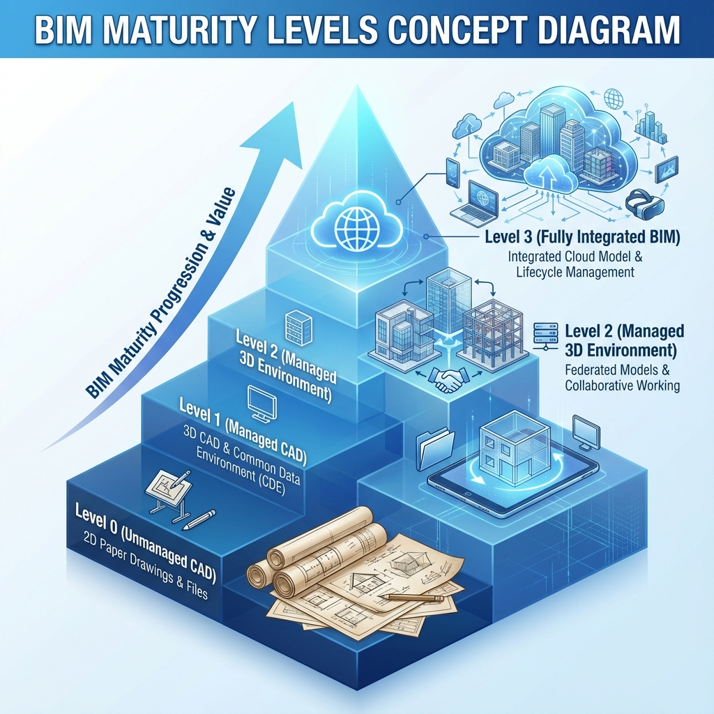

📊 ما هي مستويات نضج BIM؟
مستويات نضج BIM (BIM Maturity Levels) هي إطار يُحدد مدى تقدم المؤسسة في تبني واستخدام تقنيات BIM. تم تطوير هذا الإطار في بريطانيا وأصبح معياراً دولياً.
🔴 المستوى 0: ما قبل BIM
الوصف:
لا يوجد تعاون رقمي. كل طرف يعمل بشكل منفصل باستخدام الأساليب التقليدية.
الخصائص:
- رسومات 2D على ورق أو CAD
- لا يوجد مشاركة رقمية
- التواصل عبر البريد/الفاكس
- كل تخصص يعمل منفرداً
الواقع: لا تزال معظم الشركات الصغيرة في المنطقة العربية تعمل في هذا المستوى.
🟡 المستوى 1: 2D/3D مُدار
الوصف:
استخدام CAD مع بعض النمذجة 3D، لكن دون تبادل نماذج متكاملة.
الخصائص:
- استخدام 2D CAD مع معايير موحدة
- نماذج 3D للتصور فقط
- بيئة بيانات مشتركة بسيطة (CDE)
- تبادل الملفات عبر منصة مركزية
🟢 المستوى 2: BIM التعاوني
الوصف:
كل تخصص يعمل على نموذج 3D خاص به، مع تبادل النماذج للتنسيق.
الخصائص:
- نماذج 3D منفصلة لكل تخصص
- تبادل بصيغة IFC أو ملفات أصلية
- Clash Detection منتظم
- بيئة بيانات مشتركة (CDE) متقدمة
- BIM Execution Plan (BEP) محدد
- مسؤوليات واضحة عبر EIR/BEP
بريطانيا: المستوى 2 إلزامي للمشاريع الحكومية منذ 2016.
متطلبات المستوى 2:
| المتطلب | التفاصيل |
|---|---|
| EIR | Employer's Information Requirements |
| BEP | BIM Execution Plan |
| CDE | Common Data Environment |
| LOD | Level of Development محدد |
| IFC | تبادل مفتوح بصيغة IFC |
| COBie | تسليم بيانات التشغيل |
🔵 المستوى 3: BIM المتكامل (iBIM)
الوصف:
نموذج واحد متكامل يعمل عليه الجميع في الوقت الحقيقي عبر السحابة.
الخصائص:
- نموذج مركزي موحد (Single Source of Truth)
- تعاون في الوقت الحقيقي
- تكامل كامل لدورة الحياة
- Digital Twin للمبنى
- IoT والأتمتة
الحالة: المستوى 3 لا يزال في مرحلة التطوير عالمياً، مع وجود مشاريع تجريبية فقط.
📈 مسار التطور
- تقييم الوضع الحالي: أين نحن الآن؟
- وضع الأهداف: أي مستوى نريد الوصول إليه؟
- سد الفجوات: ما التدريب والأدوات المطلوبة؟
- التنفيذ التدريجي: البدء بمشاريع تجريبية.
- التحسين المستمر: مراجعة وتطوير العمليات.
المقال التالي: مقارنة BIM مع CAD التقليدي